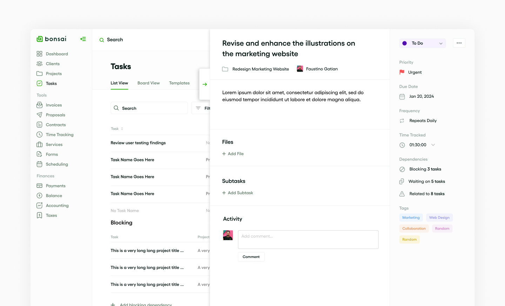
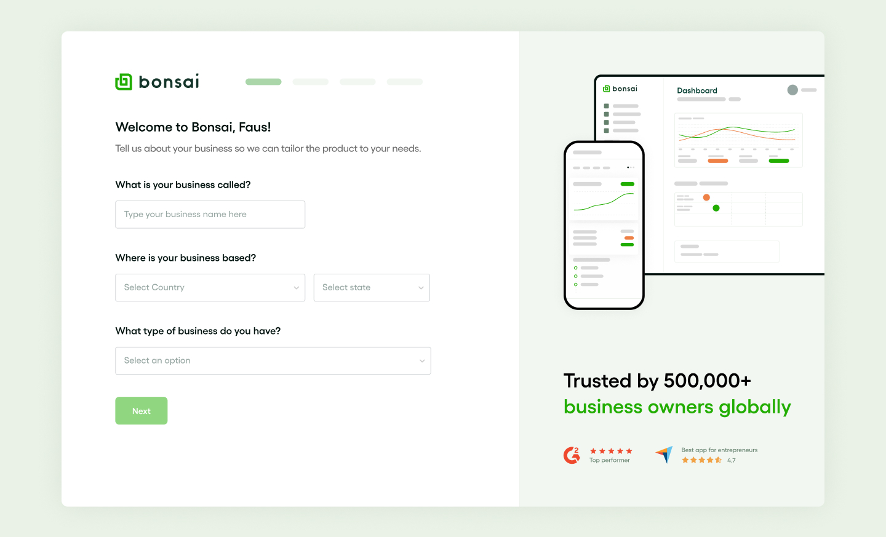
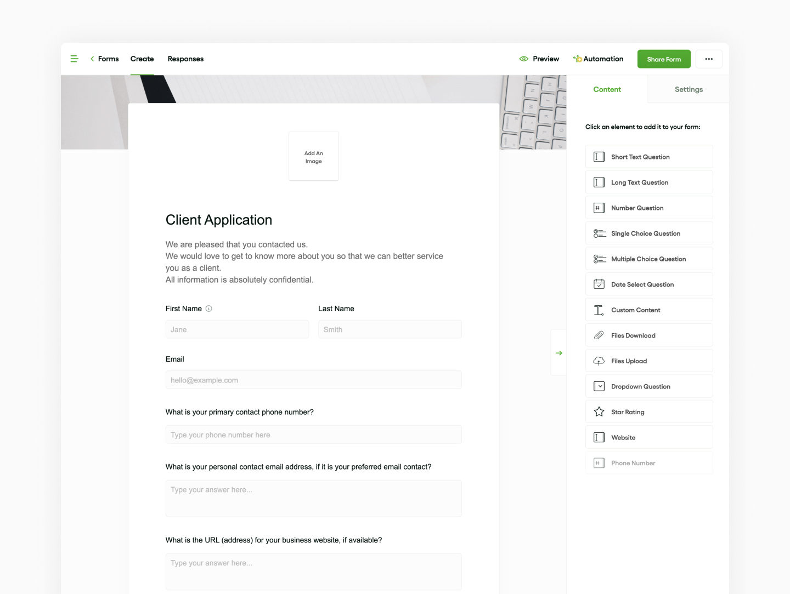
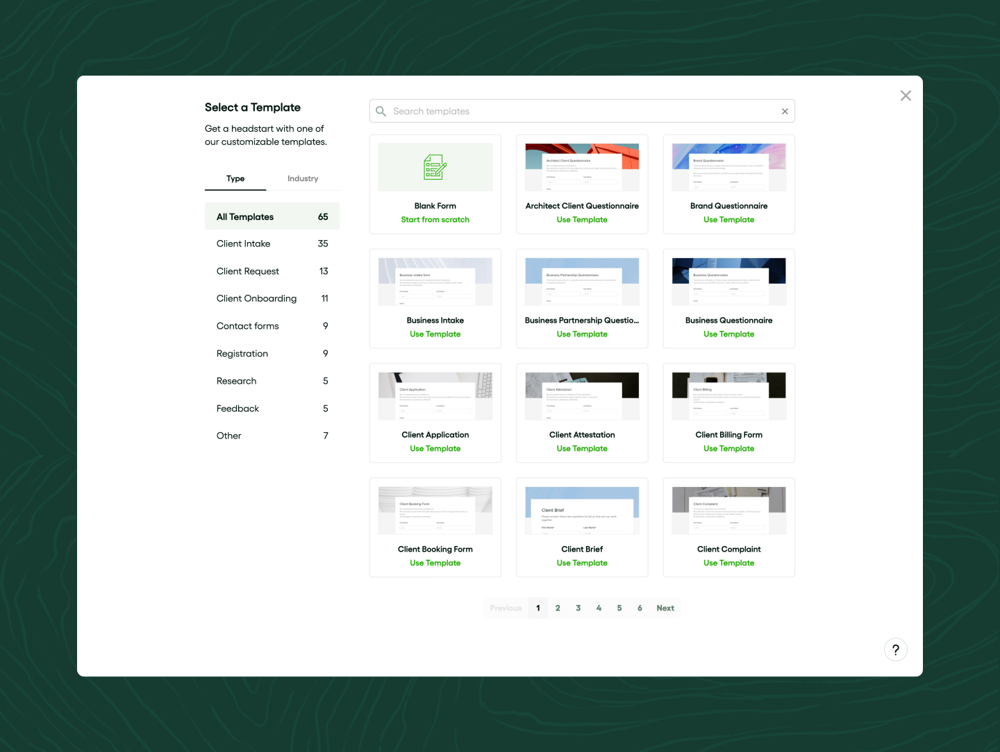
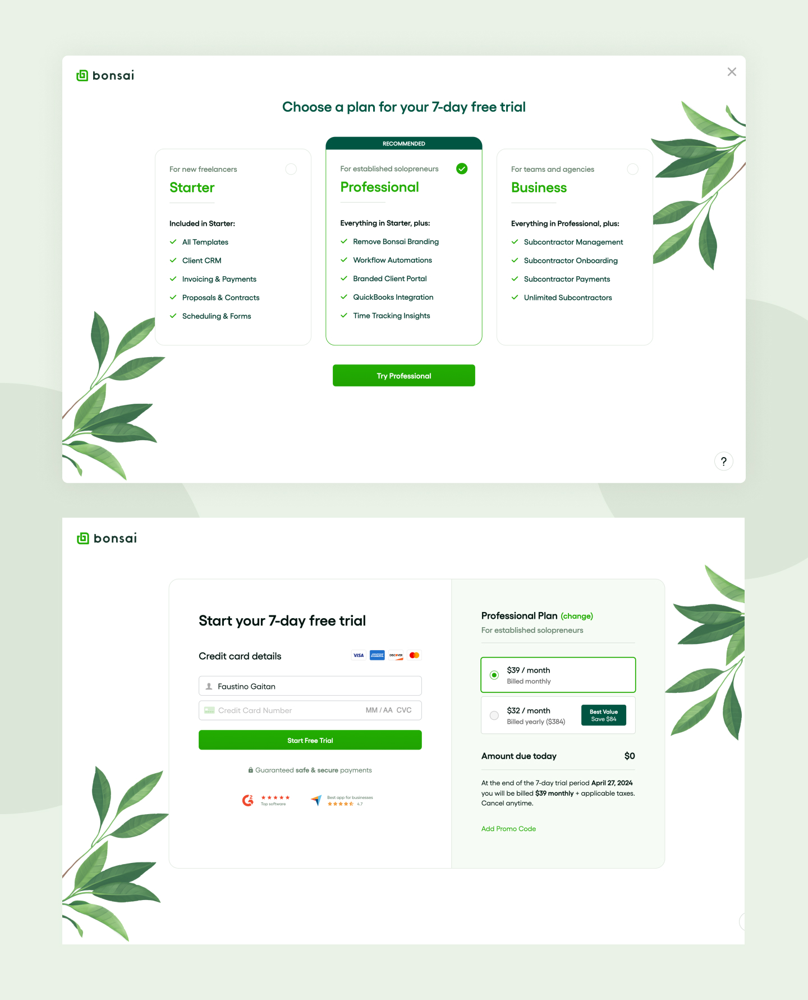
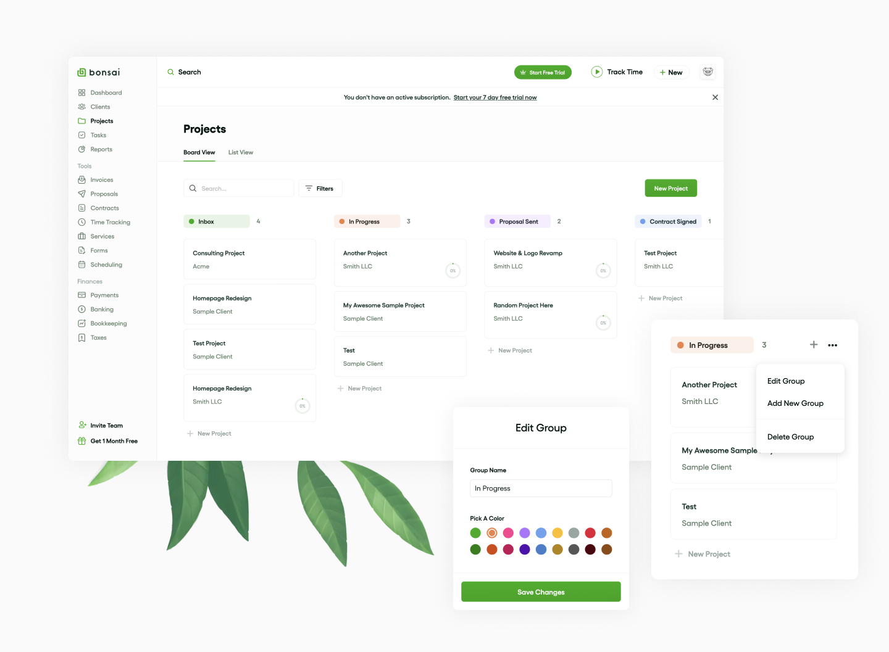

At Bonsai, I was part of the "Workflow team" that included one product designer, one product manager, and four developers. We worked collaboratively on a variety of projects to enhance the platform's functionality and improve the user experience. Here are some of the key projects I contributed to:
The previous task interface was a modal, which proved to be limiting and less user-friendly. As a team, we recognized the need for a more efficient and intuitive task management solution. Transitioning from the modal to a drawer design, we aimed to unlock additional screen real estate and improve the overall usability of the task management system.
The result of our efforts is a revamped task drawer that offers a more spacious and streamlined user experience. With increased screen space, users can seamlessly add, edit, and organize tasks, leading to enhanced productivity and smoother task management workflows.
The previous single-page sign-up process was limiting in terms of collecting essential user information. We redesigned the sign-up experience to be a wizard-style flow, allowing us to gather more detailed information from users in a structured manner.
By breaking down the sign-up process into smaller, more manageable steps, we encouraged higher user engagement as users were less overwhelmed by a lengthy form. It also enabled us to collect more relevant information from users to personalize their experience and tailor our offerings to their needs.
This effort resulted in higher engagement, conversion rates, and overall satisfaction.
As a team, we implemented a new forms functionality to empower users in capturing client data more efficiently. Our collective goal was to enhance the platform's capabilities by enabling users to create custom forms tailored to their specific needs. Looking ahead, our team aims to further optimize this feature by automating project creation based on the data collected through forms, thus simplifying the workflow for users. This enhanced forms functionality equips users with a robust toolset for gathering and organizing data seamlessly, ultimately improving their overall experience with the platform.
 We embarked on the creation of a new pricing modal designed to enhance user understanding and streamline the selection process for the most suitable pricing plan. Our collaborative efforts yielded a revamped pricing interface that significantly improved user experience. Instead of presenting prices directly within the table, we conducted AB tests and discovered that displaying prices during the payment step was more beneficial. Additionally, we incorporated credit card icons and five-star elements to bolster trust, further enhancing the overall platform experience. Clear and concise pricing options were presented, simplifying the decision-making process and contributing to a smoother user journey.
I contributed to the development of a kanban-style project board view, which offers users a more visual and organized method to manage projects. In addition to providing enhanced visual clarity, we empowered users to customize their board by allowing them to drag and drop columns and edit groups according to their preferences. Incorporating user feedback, we expanded the available statuses to better accommodate users' project management needs. This flexibility ensured that users could tailor the board to their specific workflows, further improving their project management experience.
